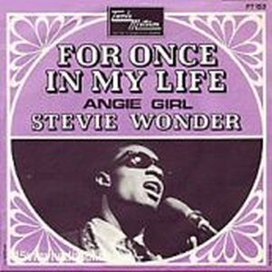
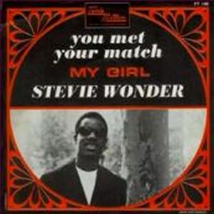
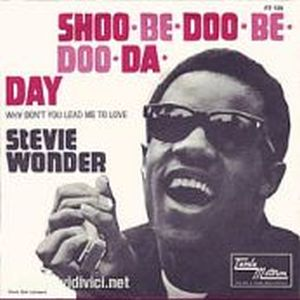
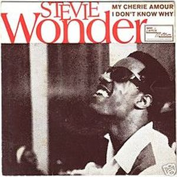

Con For Once In My Life, Stevie Wonder consigue meter tres hits en las listas de ventas americanas. Canciones como "Shoo-Be-Doo-Be-Doo-Da-Day" (nº1 lista R&B, nº 9 Pop), "You Met Your Match" (Nº2 R&B) y "For Once in My Life" (Nº 2 Pop y R&B), hacen el disco de Stevie más consistente de la década de los Sesenta.
La mayoría de los temas son producidos por Henry Cosby, pero tambien podemos encontrar otras producidas por Don Hunter junto a Stevie Wonder, el cual esta cada vez haciendose un artista más completo y polifacético. Una vez más tenemos también en la composición el tándem Henry Cosby y Stevie Wonder, y una mayor presencia de la madre de Stevie -Lula Mae Hardaway- en cuatro de los doce temas de que está compuesto este trabajo.
   